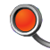

YOUR MAGIC WORLD
play now
YOUR MAGIC WORLD
play now


 alfaversion
Game guide
Help
alfaversion
Game guide
Help
Ц почитати газету
Ц показати св≥й настр≥й
Ц написати ≥ над≥слати пов≥домленн€
Ц в≥дкрити сумку
Ц подивитис€ на карту м≥ста
 Ц в≥дправити пов≥домленн€ адм≥н≥стратору
Ц в≥дкрити пункт Ђƒопомогаї
Ц в≥дкрити пункт Ђћенюї
≤конки, €к≥ зТ€вл€тимутьс€ б≥л€ персонажа, п≥дказуватимуть, €ку д≥ю можна виконувати: Ц ходити
Ц д≥€ти
Ц вз€ти в руку
Ќа локац≥€х м≥ста розташован≥ вказ≥вники, €к≥ показують можливий дл€ тебе напр€мок та телепорти Ц це м≥сце, що перенесе тебе у гру.